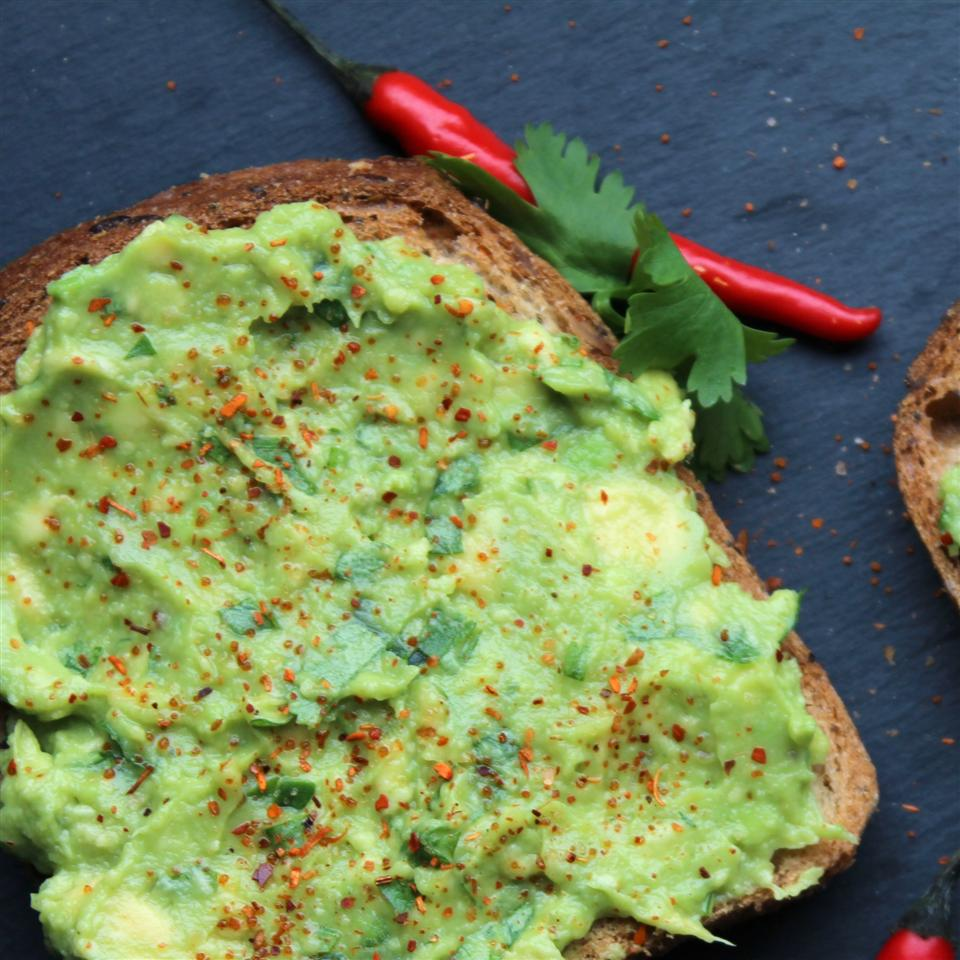

Avocado Toast

Description
This is a delicious, healthy, hearty vegan breakfast recipe.
Ingredients
- 4 slices whole-grain bread
- 1 avocado, halved and pitted
- 2 tablespoons chopped fresh parsley
- 1½ teaspoons extra-virgin olive oil
- ½ lemon, juiced
- ½ teaspoon salt
- ½ teaspoon ground black pepper
- ½ teaspoon onion powder
- ½ teaspoon garlic powder
Steps
- Toast bread in a toaster or toaster oven.
- Scoop avocado into a bowl.
- Add parsley, olive oil, lemon juice, salt, pepper, onion powder, and garlic powder; and mash together.
- Spread avocado mixture into each piece of toast.